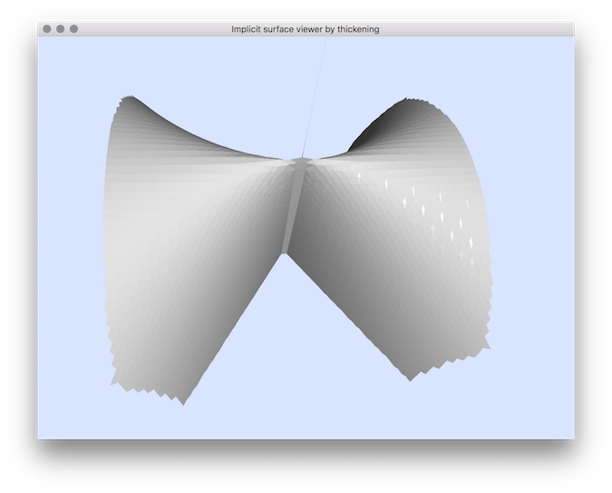

Computes the zero level set of the given polynomial.
Usage: 3dImplicitSurfaceExtractorByThickening [options] input
Allowed options are :
ositionals:
1 TEXT REQUIRED the implicit polynomial whose zero-level defines the shape of interest.
Options:
-h,--help Print this help message and exit
-p,--polynomial TEXT REQUIRED the implicit polynomial whose zero-level defines the shape of interest.
-a,--minAABB FLOAT=-10 the min value of the AABB bounding box (domain)
-A,--maxAABB FLOAT=10 the max value of the AABB bounding box (domain)
-g,--gridstep FLOAT=1 the gridstep that defines the digitization (often called h).
-t,--thickness FLOAT=0.01 the thickening parameter for the implicit surface.
-P,--project TEXT:{No,Newton}=Newton defines the projection: either No or Newton.
-e,--epsilon FLOAT=1e-06 the maximum precision relative to the implicit surface in the Newton approximation of F=0.
-n,--max_iter UINT=500 the maximum number of iteration in the Newton approximation of F=0.
-v,--view TEXT:{Singular,Normal,Hide}=Normal
specifies if the surface is viewed as is (Normal) or if places close to singularities are highlighted (Singular), or if unsure places should not be displayed (Hide).
Example:
3dImplicitSurfaceExtractorByThickening "x^2-y*z^2" -g 0.1 -a -2 -A 2 -v Singular
You should obtain such a result:

resulting visualisation.
You could also use other implicit surfaces:
- whitney : x^2-y*z^2
- 4lines : x*y*(y-x)*(y-z*x)
- cone : z^2-x^2-y^2
- simonU : x^2-z*y^2+x^4+y^4
- cayley3 : 4*(x^2 + y^2 + z^2) + 16*x*y*z - 1
- crixxi : -0.9*(y^2+z^2-1)^2-(x^2+y^2-1)^3
Some other examples (more difficult):
3dImplicitSurfaceExtractorByThickening -a -2 -A 2 "((y^2+z^2-1)^2-(x^2+y^2-1)^3)*(y*(x-1)^2-z*(x+1))^2" -g 0.025 -e 1e-6 -n 50000 -v Singular -t 0.5 -P Newton
3dImplicitSurfaceExtractorByThickening -a -2 -A 2 "(x^5-4*z^3*y^2)*((x+y)^2-(z-x)^3)" -g 0.025 -e 1e-6 -n 50000 -v Singular -t 0.05 -P Newton
- See also
- 3dImplicitSurfaceExtractorByThickening.cpp